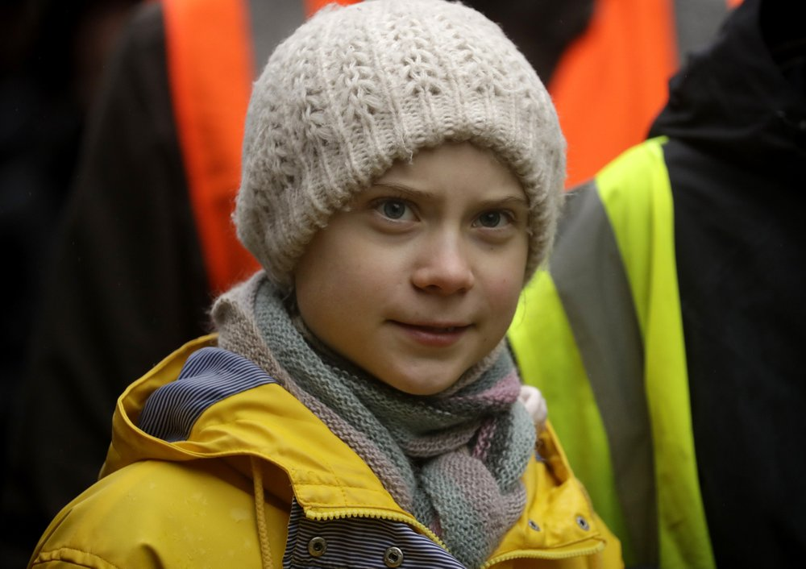
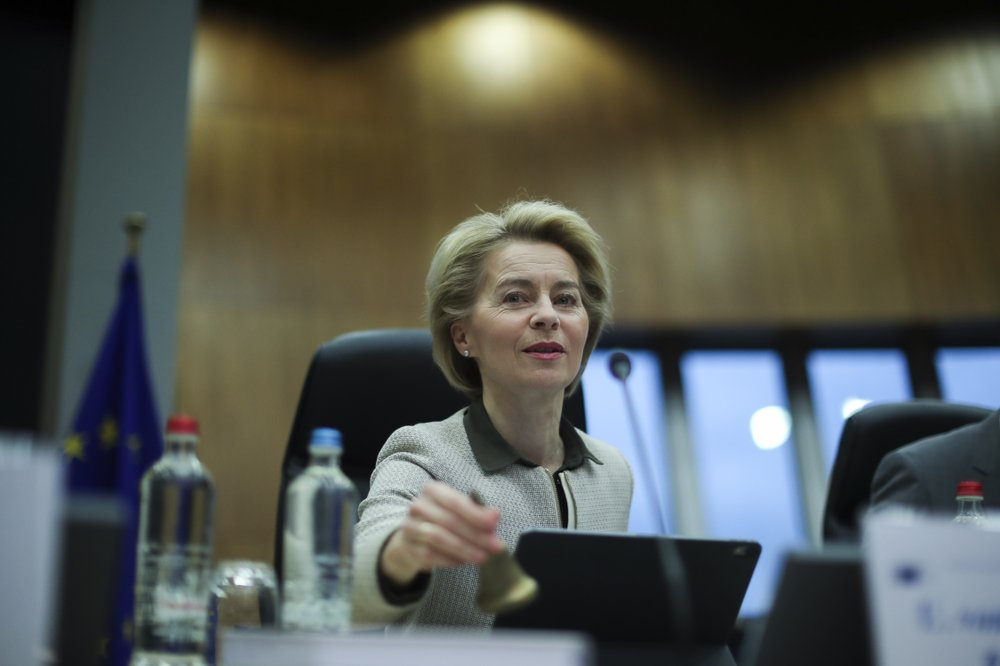

BRUSSELS (AP) — Climate activists and Green members of the European Parliament are urging the European Union to be more ambitious as the bloc gets ready to unveil plans for a climate law to cut greenhouse gas emissions to zero by mid-century.
While the Greens urged the 27-nation bloc to raise its 2030 climate targets, a group of 34 youth climate activists, including Greta Thunberg, wrote an open letter Tuesday to EU leaders explaining why they think the planned law is “a surrender.”
European Commission President Ursula von der Leyen, who has put climate change at the top of her priorities and pledged to make Europe the first climate neutral continent by 2050, will present her plans on Wednesday. To add luster to the event, she has invited Thunberg to discuss the climate legislation with her and EU commissioners.
In light of the tone of the letter, it’s unlikely that Thunberg will only sit and watch.
“Any climate law or policy that is not based on the current best available science and does not include the global aspect of equity or climate justice – principles at the very heart of the Paris Agreement – will do more harm than good,” the group said. “Such a law sends a strong signal that real, sufficient action is being taken when in fact it’s not.”
The group stressed that instead of setting long-term goals, the EU should focus on the “CO2 budget which applies for today.”
Such C02 budgets are used to measure the additional emissions that can enter the atmosphere without global warming exceeding a certain level. World leaders agreed five years ago in Paris to keep global warming below 2 degrees Celsius (3.6 Fahrenheit), ideally no more than 1.5 C (2.7 F) by the end of the century. But scientists say countries will miss both of those goals by a wide margin unless drastic steps are taken to begin cutting greenhouse gas emissions this year.
“Distant net-zero emission targets will mean absolutely nothing if we just continue to ignore the carbon dioxide budget – which applies for today, not a faraway future,” the climate activists said. “If high emissions continue like now, even for a few years, that remaining budget will soon be completely used up.”
According to a leaked draft of the proposals establishing the 2050 goal, the European Commission is proposing a mechanism for regularly raising the EU’s emissions reduction target over the next three decades, but there is no plan for an increase of the EU’s overall emissions goal for 2030.
In the draft, the European Commission said it will review the EU’s current target of a 40% greenhouse gas reduction and “explore options for a new 2030 target of 50% to 55% emission reductions compared with 1990 levels.”
Both environmental group Greenpeace and Green lawmakers in the European Parliament say that delaying an upgraded 2030 target will have damaging political consequences.
Michael Bloss, a lawmaker with the German Green Party, said it’s essential that the 2030 target should be fixed well ahead of the U.N climate talks that will be held in Glasgow in November if Europe wants to apply pressure on big-emitting countries such as China.
“We need our European goal published as soon as possible,” he said Tuesday. “The commission’s delaying tactics in putting forward the updated 2030 target is irresponsible. Emissions must be reduced by at least 65%by 2030 and could should be phased out by 2030 at the latest if we are to comply with the Paris Climate Agreement.”
Greenpeace said by failing to include a 2030 target, “there is a very real risk that the EU could go empty handed to the U.N. climate conference in Glasgow.”
Greenpeace also insists a 55% reduction target for 2030 wouldn’t be sufficient to limit global heating to 2 degrees Celsius.
To set a common trajectory and impose revised targets to member states every five years from 2023, the European Commission is also planning to adopt legally binding legislation that can enter into force if the European Parliament and European Council have no objections.
That mechanism could spark concerns among fossil fuel-dependent EU nations, which need to reorganize their economies in order to reach the 2050 target agreed last year by all EU members except Poland.